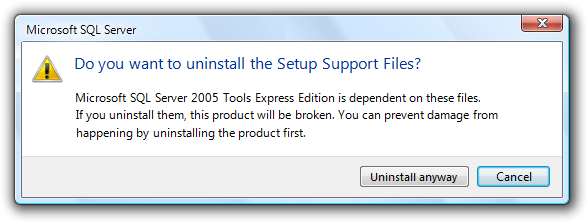
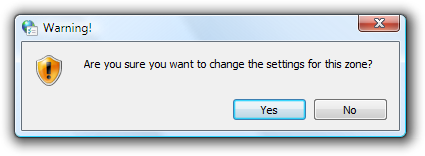
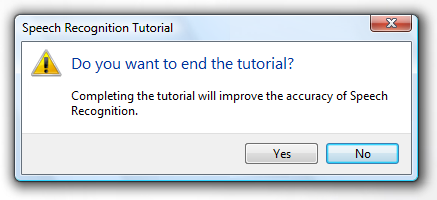
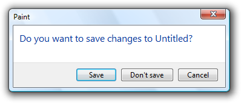
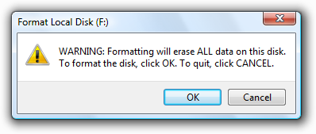

[!NOTE] This design guide was created for Windows 7 and has not been updated for newer versions of Windows. Much of the guidance still applies in principle, but the presentation and examples do not reflect our current design guidance.
A confirmation is a modal dialog box that asks if the user wants to proceed with an action.
A typical confirmation.
Confirmations have these essential characteristics:
Confirmations are most useful when the action requires the user to make a relevant and distinct choice that can't be made later. That choice often involves some element of risk that isn't obvious to the user, but risk isn't essential to confirmations. These elements are necessary to justify the interruption of responding to a modal dialog.
By contrast, warning messages present a condition that might cause a problem in the future. Their fundamental characteristic is that they involve risk:
If a confirmation involves risk, it can be considered a warning as well. Consequently, the warning message guidelines also apply.
Note: Guidelines related to dialog boxes, error messages, layout, and warning messages are presented in separate articles.
To decide, consider these questions:
The first Windows confirmation ever created undoubtedly looked like this:
The original annoying confirmation.
This was a very bad start. If you want users to hate your program, just sprinkle confirmations like this throughout. To understand why, consider the user's point of view. The user just asked to perform an action by the definition of a confirmation so unless something was somehow clicked or pressed accidentally, of course the user wants to proceed.
Not only are unnecessary confirmations annoying, but they aren't effective in protecting the user from mistakes. Users quickly discover when a program has unnecessary confirmations and their natural response is to dismiss them as quickly as possible, often without reading. Consequently, such confirmations do little more than add an extra step to these tasks.
Don't use confirmations just because there is the possibility of users making a mistake. Rather, confirmations are most effective when used to confirm actions that have significant or unintended consequences. Good confirmations never state the obvious; they should communicate something users need to be aware of a good reason not to continue. And they are used only when they are really needed by an action, such as asking users to save changes only when there are changes worth saving. Doing so demands the user's attention only when it is truly warranted.
For other types of confirmations, there is often a better design alternative than forcing users to answer a question.
Here are some design alternatives that eliminate the need for routine confirmations:
For a confirmation to have value, users need to understand the reason not to proceed. Sometimes the reason is obvious, as when users are closing a document with changes that haven't been saved:

In this example, the reason for the confirmation is obvious.
In other situations, the reason might not be so obvious.
When choosing commit button labels for dialog boxes, the general guidelines is to choose labels that are specific responses to the main instruction. This leads to efficient decision making because users have to read a minimum amount of text to proceed. However, this efficiency goal can be counterproductive for confirmations. Consider this example:
Incorrect:

In this example, the correct response requires thought.
If you present this confirmation immediately after the user gave the Uninstall command, the user's response is likely to be "Of course I want to uninstall!" The user will click Uninstall without giving it a second thought.
For confirmations, we don't want users making hasty, emotional decisions. To encourage users to think about their response, we need to provide a small decision-making speed bump. When practical, it's usually better to do this by carefully phrasing commit buttons. For example, we can use additional language to indicate that there is a reason not to continue.
Better:

In this example, "anyway" is added to the commit button label to indicate that the confirmation gives a reason not to continue.
If that approach isn't practical, we can use Yes/No commit buttons.
Also better:
In this example, using Yes/No commit buttons forces users to at least read the main instruction.
If you are going to ask a question, you must provide sufficient information for users to answer that question intelligently. Consider the Confirm File Replace dialog from Windows XP:

The Windows XP Confirm File Replace dialog box.
Does this confirmation provide all the information users might need to answer the question? Before you answer, consider the most common user scenarios:
Users can achieve scenario 1 by clicking Yes and scenario 2 by clicking No. They can achieve scenario 3 by comparing the file dates and clicking the appropriate button, but notice how much thought it takes to determine the newer file and then determine the appropriate button especially for what is likely to be the most common scenario.
Scenarios 4, 5, and 6 are also surprisingly difficult. The file sizes are rounded off, so, for example, it is impossible to determine if these files have the same size or even if they are the same file. The icons are for the application used to open the file, so users would have to open the files to inspect and compare their content. Having thumbnails of the file content would be far more useful in answering the question.
The Copy File confirmation from Windows Vista does a much better job of handling these scenarios by providing more information and adding the option to keep both files:

The Windows Vista Copy File confirmation.
If you are going to ask a question, ensure that users understand the question and the implications of the alternative responses. Consider this Windows Internet Explorer security confirmation:

A vague security confirmation.
This confirmation asks a question that users can't possibly answer intelligently. The user has requested that Windows Internet Explorer display a page, and this message advises against it implicitly through the wording of the text and by highlighting No as the default choice.
The specific security issue that the page poses is not sufficiently explained, so the risk of continuing isn't clear. What information in the confirmation would cause the user ever to click No? Because of the vagueness of the message, the confirmation isn't likely to discourage users from continuing, but will make them feel bad about doing so.
For this confirmation to be useful, it must provide more information specific information that might cause the user to decide not to proceed. In general, for each response in a confirmation, consider the scenarios that require it and make sure that there is sufficient information provided for users to want to choose it. Provide choices, not dilemmas.
Thinking through the scenarios and the likelihood of choosing each response suggests a systematic way to determine if a confirmation is necessary. If users are likely to select all of the responses, the confirmation is necessary and useful. However, if only one response is likely (say 98 percent of the time), the confirmation is clearly unnecessary and should be removed. Note that confirmations related to security, legal, and safety issues are possible exceptions.

Is this confirmation necessary? Will users ever select No? It's possible but very improbable. This confirmation should be removed.
If you do only three things...
Make sure your confirmation is really necessary. There should be a legitimate and clear reason not to proceed, and a chance that sometimes users won't.
If the reason for the confirmation isn't immediately obvious, choose commit buttons that encourage users to think about their response. Typically, this is done by phrasing the confirmation as a yes or no question and providing completely self-explanatory or Yes/No answers.
Consider all the scenarios and provide the information required to answer the question intelligently.
Confirmations have several usage patterns:
| Usage | Example |
|---|---|
| Routine confirmations confirm that the user wants to proceed with a routine, low risk action. | These confirmations are usually phrased "are you sure...?" and often have a don't show this message again check box to minimize their annoyance.   Examples of routine confirmations. Note: This pattern is usually unnecessary and should be avoided. Examples of routine confirmations. Note: This pattern is usually unnecessary and should be avoided. |
| Risky action confirmations confirm that the user wants to proceed with an action that has some risk and can't be easily undone. | Because they have risk, these confirmations usually have a warning icon.  Examples of risky action confirmations. Examples of risky action confirmations. |
| Unintended consequence confirmations confirm that the user wants to proceed with an action that has unexpected or unintended consequences. | In addition to asking a question, these confirmations point out the unintended consequences. because they have unintended consequences, these confirmations usually have a warning icon.  examples of unintended consequence confirmations. however, this pattern requires that the consequences are truly unintended. incorrect: examples of unintended consequence confirmations. however, this pattern requires that the consequences are truly unintended. incorrect:  The consequences are intended here, so this is a routine confirmation. The consequences are intended here, so this is a routine confirmation. |
| Clarifications clarify how the user wants to proceed with an action that has potentially ambiguous or unexpected consequences. | Drag-and-drop operations can result in clarifications if the effect of the operation can be misinterpreted.  Examples of clarifications. Note: This pattern should be avoided because it is better to design actions without ambiguous consequences and assume the most likely desired result. Examples of clarifications. Note: This pattern should be avoided because it is better to design actions without ambiguous consequences and assume the most likely desired result. |
| Security confirmations confirm that the user wants to proceed with an action with security consequences. |  Examples of security confirmations. Examples of security confirmations. |
| Ulterior motive confirmations provide information about an action, but present it as a confirmation. | While these dialog boxes are presented as confirmations, their real goal is user education or advertisement of features. An example of an ulterior motive confirmation. Note: This pattern is not recommended because there is usually a better, more direct alternative. For example, animations are a better way to show the relationship between cause and effect. |
Incorrect:

This example is incorrect when used for an empty e-mail or document that wasn't changed by the user.
Confirmations don't use title bar icons.
The content area icon for a confirmation is based on its design pattern:
| Pattern | Icon |
|---|---|
| Routine confirmations | No icon. |
| Risky action confirmations | Warning icon. |
| Unintended consequence confirmations | Use a warning icon if there is risk, the feature icon if available; otherwise, no icon. |
| Clarifications | If the confirmation involves a document, use the document's thumbnail; otherwise, use the feature icon if available, or no icon. |
| Security confirmations | Warning icon. |
| Ulterior motive confirmations | No icon. |
Don't use warning icons for routine questions. Doing so is counter to the encouraging tone of Windows and makes using your program feel like a hazardous activity. Assume users understand the consequences of canceling a task before it is finished.
Incorrect:

In this example, a warning icon is used to ask a routine question.

In this example, the reason for the confirmation is obvious, so Save and Don't save work well.
Correct:
In this example, using Yes/No commit buttons forces users to at least read the main instruction.
Incorrect:

In this example, using OK/Cancel is confusing.
Correct:
Incorrect:

In the incorrect example, Yes is used to restart Windows.
Acceptable:

Better:
In the better example, command links make the alternatives clear.
For more guidelines and examples, see Command Links.
The default response for a confirmation is based on its design pattern:
| Pattern | Default response |
|---|---|
| Routine confirmations | Proceed. |
| Risky action confirmations | Don't proceed (or the safe choice). |
| Unintended consequence confirmations | If consequences are significant, don't proceed; otherwise, proceed. |
| Clarifications | The most likely response. |
| Security confirmations | Don't proceed. |
| Ulterior motive confirmations | Proceed. |
Incorrect:

Still incorrect:

In these examples, adding a Don't show this message again option doesn't fix an unnecessary confirmation.
For more guidelines, see Dialog Boxes.

This example has an option for bulk operations.
Incorrect:
In this example, Windows Explorer in Windows XP confirms each read-only file during a bulk file move. Better just to copy the read-only files without asking, or postpone handling these files and present the confirmation at the end of the task.
For labeling guidelines, see Progressive Disclosure.
Incorrect:

In this example, the term "warning" is unnecessary.
However, if the confirmation is from a long-running task and may display well after the task started, always use the command or feature to clearly identify the context.
In this example, the drive to be formatted is included in the title.
The main instruction for a confirmation is based on its design pattern:
| Pattern | Main instruction |
|---|---|
| Unintended consequence confirmations | state the unintended consequence. exception: if a question asking if the user wants to proceed clearly implies the unintended consequence, ask the question instead. In this example, asking the user to proceed sufficiently conveys the consequences of the action. |
| All others | Ask a single question to determine if the user wants to proceed. |
Be concise use only a single, complete sentence. Strip the main instruction down to the essential information. If you must explain anything more, use a supplemental instruction.
Be specific if there are objects involved, give their full names.
Use positive phrasing. Positive phrasing is easier for users to understand.
Correct:
Do you want to enable file and printer sharing?
Incorrect:
Do you want to disable file and printer sharing?
However, phrasing must match the associated command, even if the command is negatively phrased; so, for example, use disable to confirm a Disable command.
While there are no strict rules for phrasing, these common confirmation phrases have the indicated connotation:
| Phrase | Connotation |
|---|---|
| Are you sure you want to [perform an action]? | Confirming the direct result of a user request. |
| Do you want to [perform an action]? | Confirming a side effect of a user request. |
| Would you like to [select a result]? | Need a clarification. |
| [Perform an action]? | No connotation. |
For risky action confirmations, use the term permanently to indicate that an action can't be undone.

In this example, "permanently" indicates that the action can't be undone.
| Label | Value |
|---|---|
| Pattern | Supplemental instruction |
| Unintended consequence confirmations | Ask a single question to determine if the user wants to proceed. |
| All others | Explain any non-obvious reasons why the user might not want to proceed. Such reasons include: Potential loss of one or more of the following: A valuable asset, such as data loss or financial loss.System access or integrity.Privacy or control over confidential information.Actions that are irreversible. |
When referring to confirmations:
Example: In the Copy File message, click the newer file.